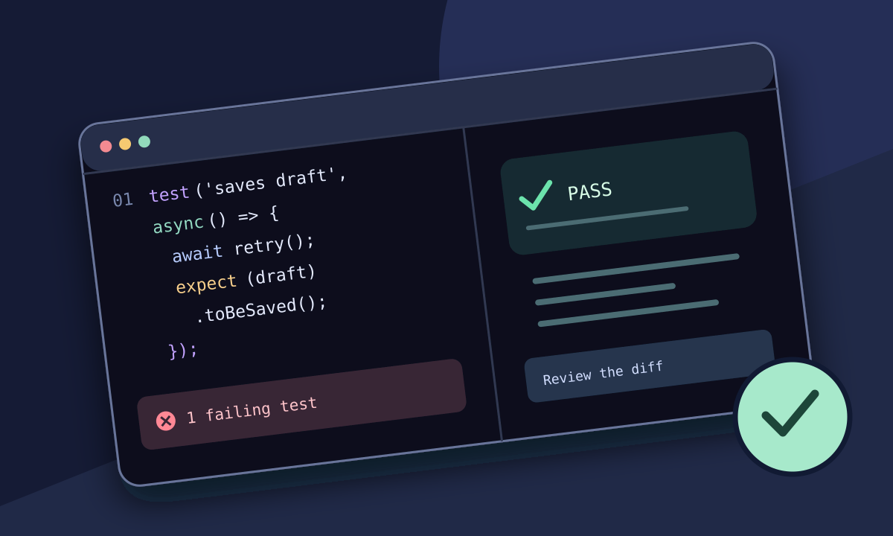
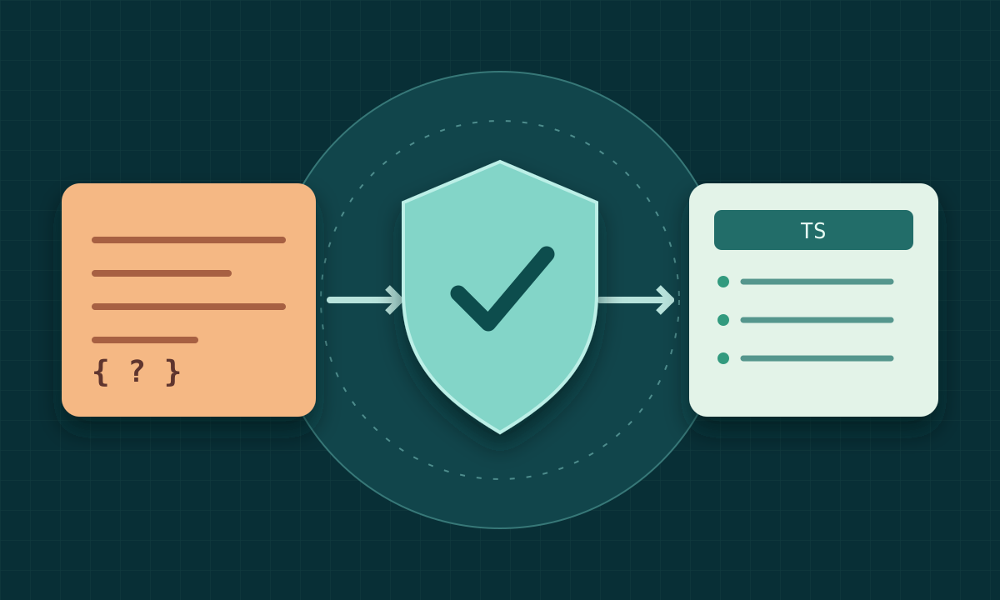

The sale has to survive a dropped connection
A POS should keep recording a cash sale when the network disappears — then sync safely without duplicating it.

Practical field notes from building software in Zimbabwe: engineering decisions, product thinking, responsible AI and lessons for junior developers.
A POS should keep recording a cash sale when the network disappears — then sync safely without duplicating it.
Design an offline sale that survives a lost network, a closed app and a missing sync acknowledgement without duplicating the transaction.
A practical loop for giving coding agents a clear finish line, reviewing their changes and measuring the whole job.

Make a campus timetable easier to import, verify and open in a real calendar, even on a small phone.

Validate external JSON at runtime, keep bad payloads out of your UI and test the failure path.

Separate verified policy answers from requests that need a booking check or a staff decision.

Build one finished project with a real user, a working demo and evidence you can explain in an interview.
Turn a small business website into a clear customer journey, then test whether the enquiry actually reaches the team.